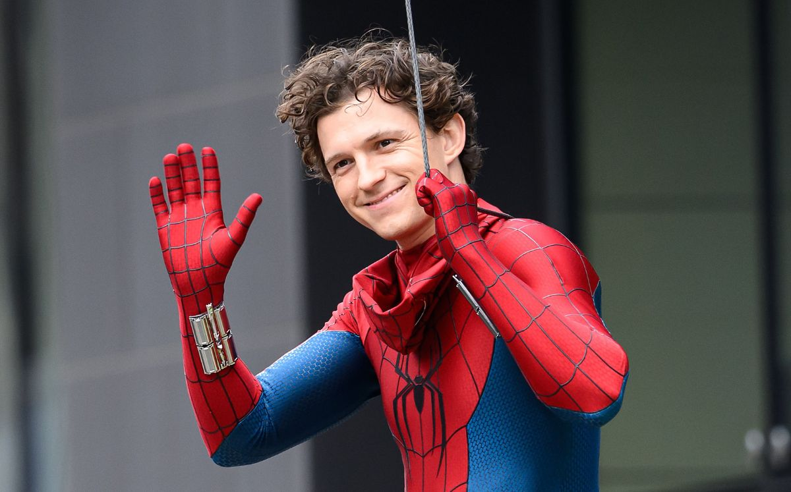

La ultima pelicula de Tom Holland esta siendo un exito grandioso.
Ya superó los US$2,000 millones en taquilla mundial. Esta pelicula se convirtió en la pelicula de Spider-Man mas taquillea del unirverso de Spider-Man
Se filtraron aproximadamente cuatro minutos del material de Spider-Man: Beyond the Spider-Verse.
El productor y guionista Christopher Miller reaccionó públicamente y expresó su molestia

Las preventas de Doomsday están avanzando 65% por encima de las de Brand New Day.
Durante el mismo período de comparación, lo que podría indicar otro estreno gigantesco para Marvel
La escena postcréditos de Spider-Man: Brand New Day deja abierta la conexión de Peter Parker con Avengers: Doomsday y Secret Wars. Marvel todavía mantiene en secreto buena parte de su participación.

Tom Holland está teniendo un año enorme. Spider-Man: Brand New Day ya superó los US$2,000 millones mundialmente y, según reportes recientes.
Holland podría terminar ganando al menos US$100 millones entre su salario y bonos por taquilla.
Zendaya continúa formando parte del universo de Spider-Man y aparece junto a Tom Holland en Brand New Day.
La pelicula esta teniendo una recepción comercial extraordinaria. Consolidando nuevamente a ambos como una de las parejas protagonistas mas exitosas del MCU.
Además, Holland había contado anteriormente que le comunicó a Zendaya inmediatamente cuando supo que Robert Downey Jr. regresaría a Marvel como Doctor Doom